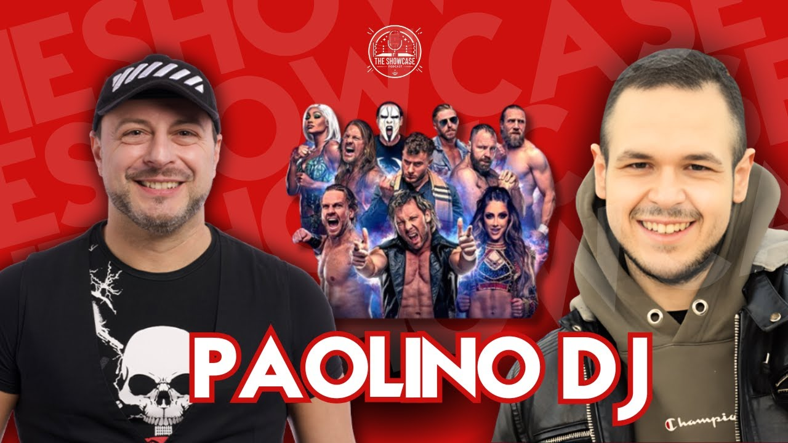
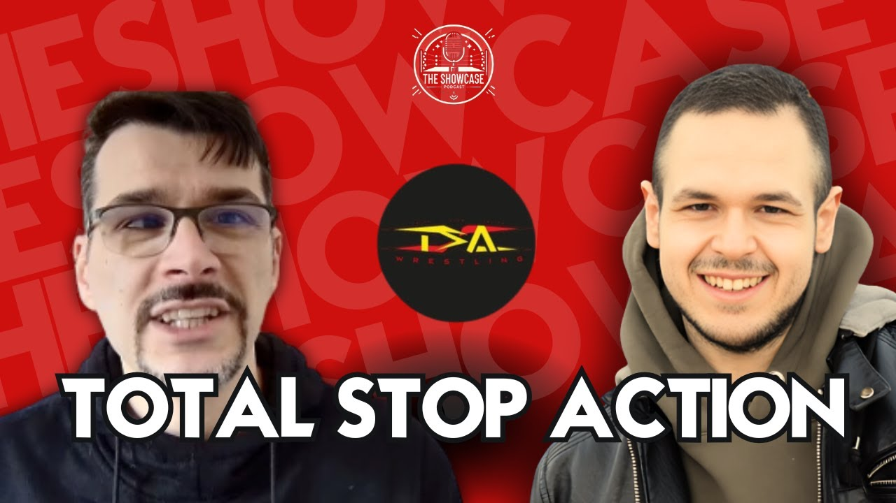
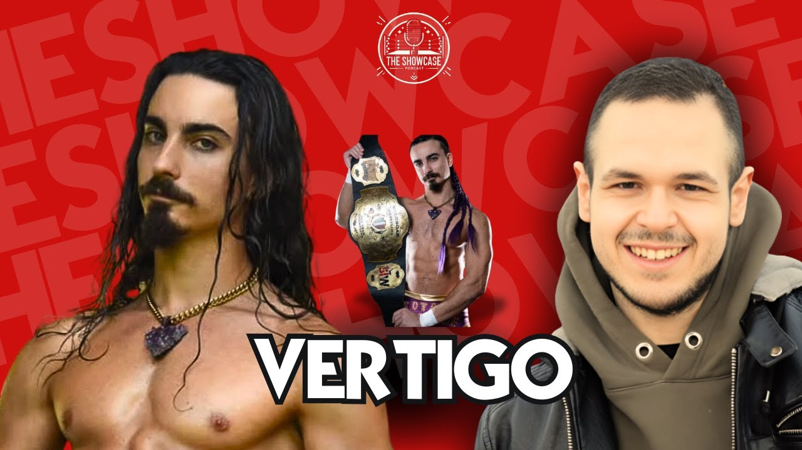

Rubrica
The Showcase
Le mie interviste e i podcast con wrestler, arbitri e creator del wrestling italiano.
The Showcase è il podcast di Tony Wrestling: lunghe chiacchierate con wrestler italiani e internazionali, arbitri, creator e addetti ai lavori. Qui trovi tutte le puntate da guardare e il racconto di cosa ci siamo detti.
Federazione
 Alessandro Bosio, da Avanti un altro al wrestling: la mia intervistaThe Showcase20 ottobre 20264 min
Alessandro Bosio, da Avanti un altro al wrestling: la mia intervistaThe Showcase20 ottobre 20264 min Alessio Marsadri (Alex Fiery): chi è il creator di wrestling di TikTok, la mia intervistaThe Showcase20 ottobre 20265 min
Alessio Marsadri (Alex Fiery): chi è il creator di wrestling di TikTok, la mia intervistaThe Showcase20 ottobre 20265 min CertifiedY: chi è e cosa mi ha raccontato a The ShowcaseThe Showcase20 ottobre 20265 min
CertifiedY: chi è e cosa mi ha raccontato a The ShowcaseThe Showcase20 ottobre 20265 min Marco di Cronache di Wrestling: Nexus, WrestleMania e community nell'episodio 2 di The ShowcaseThe Showcase20 ottobre 20264 min
Marco di Cronache di Wrestling: Nexus, WrestleMania e community nell'episodio 2 di The ShowcaseThe Showcase20 ottobre 20264 min Cry Gallagher Legend Killer: il creator fan di Randy Orton a The ShowcaseThe Showcase20 ottobre 20264 min
Cry Gallagher Legend Killer: il creator fan di Randy Orton a The ShowcaseThe Showcase20 ottobre 20264 min D3, il wrestler romano che ha lottato in WWE e AEW: la mia intervistaThe Showcase20 ottobre 20265 min
D3, il wrestler romano che ha lottato in WWE e AEW: la mia intervistaThe Showcase20 ottobre 20265 min Deimos Hatebreed: il gladiatore italiano tra NWE e Giappone a The ShowcaseThe Showcase20 ottobre 20264 min
Deimos Hatebreed: il gladiatore italiano tra NWE e Giappone a The ShowcaseThe Showcase20 ottobre 20264 min Eagle di Wrestling With Eagle: creator, wrestler e fan di Drew McIntyreThe Showcase20 ottobre 20264 min
Eagle di Wrestling With Eagle: creator, wrestler e fan di Drew McIntyreThe Showcase20 ottobre 20264 min Egames: chi è il creator e cosa mi ha raccontato a The ShowcaseThe Showcase20 ottobre 20264 min
Egames: chi è il creator e cosa mi ha raccontato a The ShowcaseThe Showcase20 ottobre 20264 min Enrico Petrelli: l'arbitro più grosso d'Italia a The ShowcaseThe Showcase20 ottobre 20265 min
Enrico Petrelli: l'arbitro più grosso d'Italia a The ShowcaseThe Showcase20 ottobre 20265 min Filippo Wonderblade: chi è il giovane wrestler allievo di Red Scorpion (intervista The Showcase)The Showcase20 ottobre 20264 min
Filippo Wonderblade: chi è il giovane wrestler allievo di Red Scorpion (intervista The Showcase)The Showcase20 ottobre 20264 min Jhonny Puttini: chi è l'arbitro di wrestling veronese che ha arbitrato in quattro continentiThe Showcase20 ottobre 20264 min
Jhonny Puttini: chi è l'arbitro di wrestling veronese che ha arbitrato in quattro continentiThe Showcase20 ottobre 20264 min Kimura: chi è il rapper del wrestling e cosa mi ha raccontato a The ShowcaseThe Showcase20 ottobre 20265 min
Kimura: chi è il rapper del wrestling e cosa mi ha raccontato a The ShowcaseThe Showcase20 ottobre 20265 min King Danza: chi è il wrestler italiano allievo di Ultimo Dragon (intervista The Showcase)The Showcase20 ottobre 20264 min
King Danza: chi è il wrestler italiano allievo di Ultimo Dragon (intervista The Showcase)The Showcase20 ottobre 20264 min Luca Carbonaro: chi è il giornalista che ha chiesto a Triple H un PLE in ItaliaThe Showcase20 ottobre 20265 min
Luca Carbonaro: chi è il giornalista che ha chiesto a Triple H un PLE in ItaliaThe Showcase20 ottobre 20265 min Main Event Club: chi sono Leo e Isu, i creator di wrestling e WWE 2KThe Showcase20 ottobre 20264 min
Main Event Club: chi sono Leo e Isu, i creator di wrestling e WWE 2KThe Showcase20 ottobre 20264 min MaxIsAwesome92: il nonno degli youtuber di wrestling italiani a The ShowcaseThe Showcase20 ottobre 20264 min
MaxIsAwesome92: il nonno degli youtuber di wrestling italiani a The ShowcaseThe Showcase20 ottobre 20264 min Mont-Gaming: il creator di WWE 2K e Psycho Pippo a The ShowcaseThe Showcase20 ottobre 20264 min
Mont-Gaming: il creator di WWE 2K e Psycho Pippo a The ShowcaseThe Showcase20 ottobre 20264 min Painkeeper: chi è il wrestler più grosso d'Italia, la mia intervistaThe Showcase20 ottobre 20265 min
Painkeeper: chi è il wrestler più grosso d'Italia, la mia intervistaThe Showcase20 ottobre 20265 min
Paolino DJ: chi è la voce di Radio 105 e dell'AEW, e cosa mi ha raccontato a The ShowcaseThe Showcase20 ottobre 20265 min Santino Marella: chi è e perché l'Italia lo ama, la mia intervista in ItaliaThe Showcase20 ottobre 20263 min
Santino Marella: chi è e perché l'Italia lo ama, la mia intervista in ItaliaThe Showcase20 ottobre 20263 min The Wrestler Trip: Davide e la vita da aspirante wrestlerThe Showcase20 ottobre 20264 min
The Wrestler Trip: Davide e la vita da aspirante wrestlerThe Showcase20 ottobre 20264 min
Total Stop Action: chi sono i creator italiani delle biografie e delle pagelle di wrestlingThe Showcase20 ottobre 20264 min
Vertigo: chi è il wrestler della SIW e cosa mi ha raccontato a The ShowcaseThe Showcase20 ottobre 20265 min
Nessun articolo con questi filtri. Prova la ricerca completa.
I video della rubrica
 Articolo + video1:10:25Kimura: chi è il rapper del wrestling e cosa mi ha raccontato a The Showcase
Articolo + video1:10:25Kimura: chi è il rapper del wrestling e cosa mi ha raccontato a The Showcase Articolo + video1:18:59Mont-Gaming: il creator di WWE 2K e Psycho Pippo a The Showcase
Articolo + video1:18:59Mont-Gaming: il creator di WWE 2K e Psycho Pippo a The Showcase Articolo + video1:09:38Alessio Marsadri (Alex Fiery): chi è il creator di wrestling di TikTok, la mia intervista
Articolo + video1:09:38Alessio Marsadri (Alex Fiery): chi è il creator di wrestling di TikTok, la mia intervista Articolo + video26:30Filippo Wonderblade: chi è il giovane wrestler allievo di Red Scorpion (intervista The Showcase)
Articolo + video26:30Filippo Wonderblade: chi è il giovane wrestler allievo di Red Scorpion (intervista The Showcase) Articolo + video1:14:12Alessandro Bosio, da Avanti un altro al wrestling: la mia intervista
Articolo + video1:14:12Alessandro Bosio, da Avanti un altro al wrestling: la mia intervista Articolo + video1:15:24CertifiedY: chi è e cosa mi ha raccontato a The Showcase
Articolo + video1:15:24CertifiedY: chi è e cosa mi ha raccontato a The Showcase Articolo + video1:09:36MaxIsAwesome92: il nonno degli youtuber di wrestling italiani a The Showcase
Articolo + video1:09:36MaxIsAwesome92: il nonno degli youtuber di wrestling italiani a The Showcase Articolo + video9:05Santino Marella: chi è e perché l'Italia lo ama, la mia intervista in Italia
Articolo + video9:05Santino Marella: chi è e perché l'Italia lo ama, la mia intervista in Italia Articolo + video1:07:23Jhonny Puttini: chi è l'arbitro di wrestling veronese che ha arbitrato in quattro continenti
Articolo + video1:07:23Jhonny Puttini: chi è l'arbitro di wrestling veronese che ha arbitrato in quattro continenti Articolo + video1:42:32D3, il wrestler romano che ha lottato in WWE e AEW: la mia intervista
Articolo + video1:42:32D3, il wrestler romano che ha lottato in WWE e AEW: la mia intervista Articolo + video1:05:42Paolino DJ: chi è la voce di Radio 105 e dell'AEW, e cosa mi ha raccontato a The Showcase
Articolo + video1:05:42Paolino DJ: chi è la voce di Radio 105 e dell'AEW, e cosa mi ha raccontato a The Showcase Articolo + video1:24:48Enrico Petrelli: l'arbitro più grosso d'Italia a The Showcase
Articolo + video1:24:48Enrico Petrelli: l'arbitro più grosso d'Italia a The Showcase Articolo + video1:23:54Luca Carbonaro: chi è il giornalista che ha chiesto a Triple H un PLE in Italia
Articolo + video1:23:54Luca Carbonaro: chi è il giornalista che ha chiesto a Triple H un PLE in Italia Articolo + video45:12Total Stop Action: chi sono i creator italiani delle biografie e delle pagelle di wrestling
Articolo + video45:12Total Stop Action: chi sono i creator italiani delle biografie e delle pagelle di wrestling Articolo + video1:06:05Eagle di Wrestling With Eagle: creator, wrestler e fan di Drew McIntyre
Articolo + video1:06:05Eagle di Wrestling With Eagle: creator, wrestler e fan di Drew McIntyre Articolo + video1:44:32Vertigo: chi è il wrestler della SIW e cosa mi ha raccontato a The Showcase
Articolo + video1:44:32Vertigo: chi è il wrestler della SIW e cosa mi ha raccontato a The Showcase Articolo + video1:05:54Deimos Hatebreed: il gladiatore italiano tra NWE e Giappone a The Showcase
Articolo + video1:05:54Deimos Hatebreed: il gladiatore italiano tra NWE e Giappone a The Showcase Articolo + video1:09:08Painkeeper: chi è il wrestler più grosso d'Italia, la mia intervista
Articolo + video1:09:08Painkeeper: chi è il wrestler più grosso d'Italia, la mia intervista Articolo + video1:38:29King Danza: chi è il wrestler italiano allievo di Ultimo Dragon (intervista The Showcase)
Articolo + video1:38:29King Danza: chi è il wrestler italiano allievo di Ultimo Dragon (intervista The Showcase) Articolo + video1:16:57Main Event Club: chi sono Leo e Isu, i creator di wrestling e WWE 2K
Articolo + video1:16:57Main Event Club: chi sono Leo e Isu, i creator di wrestling e WWE 2K Articolo + video47:52Egames: chi è il creator e cosa mi ha raccontato a The Showcase
Articolo + video47:52Egames: chi è il creator e cosa mi ha raccontato a The Showcase Articolo + video1:08:51Cry Gallagher Legend Killer: il creator fan di Randy Orton a The Showcase
Articolo + video1:08:51Cry Gallagher Legend Killer: il creator fan di Randy Orton a The Showcase Articolo + video9:08Ho intervistato Nic Nemeth e Alberto Del Rio in Italia: la NWE a Napoli
Articolo + video9:08Ho intervistato Nic Nemeth e Alberto Del Rio in Italia: la NWE a Napoli Articolo + video46:35Marco di Cronache di Wrestling: Nexus, WrestleMania e community nell'episodio 2 di The Showcase
Articolo + video46:35Marco di Cronache di Wrestling: Nexus, WrestleMania e community nell'episodio 2 di The Showcase Articolo + video1:21:22The Wrestler Trip: Davide e la vita da aspirante wrestler
Articolo + video1:21:22The Wrestler Trip: Davide e la vita da aspirante wrestler